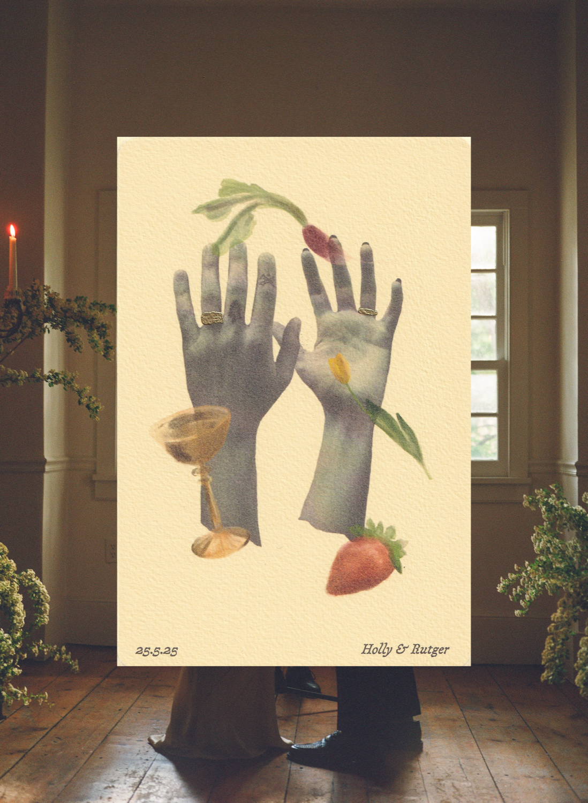
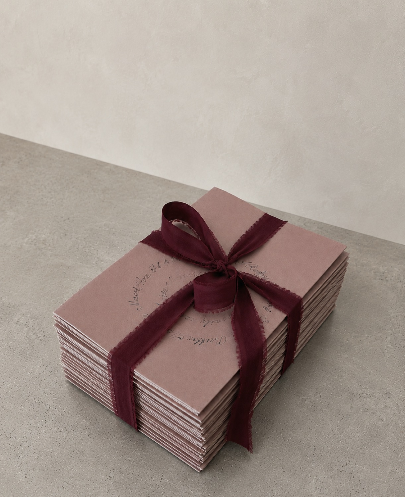
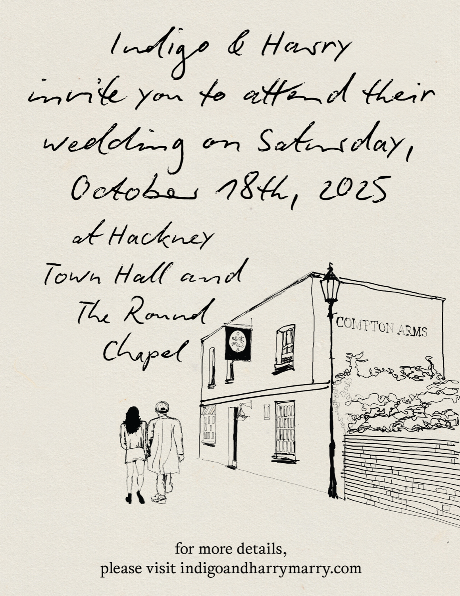
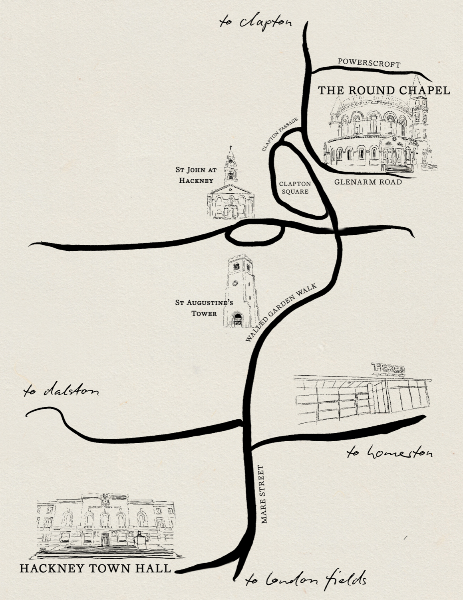

Holly Mia Britton is a British-American artist, designer, and creative director who graduated from Parsons, The New School. Her craft includes commissioned artworks, custom stationery, visual identities, and creative direction for select clients.



